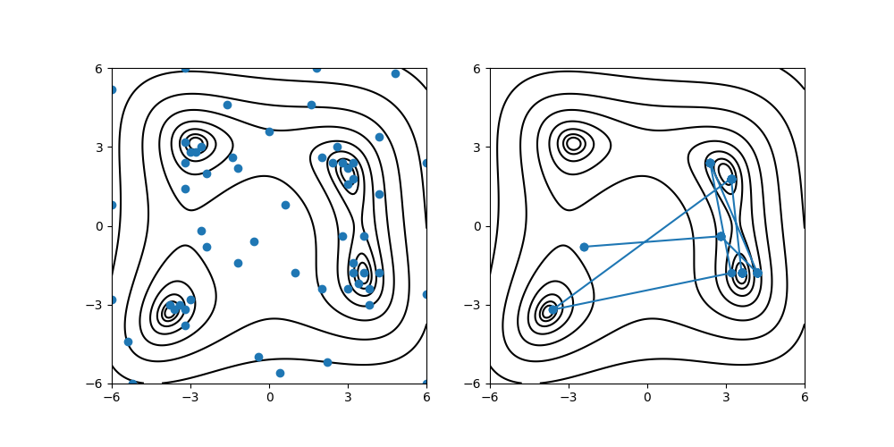

Search by Bayesian optimization#
This tutorial describes how to solve the minimization problem of the Himmelblau function by using Bayesian optimization (BO). ODAT-SE uses PHYSBO for BO. The PHYSBO package should be installed beforehand.
Sample files#
Sample files are available from sample/analytical/bayes.
This directory includes the following files:
input.tomlThe input file of odatse
do.shScript for running this tutorial
In addition, plot_himmel.py in the sample/analytical directory is used to visualize the result.
Input files#
This subsection describes the input file. For details, see the manual of bayes.
[base]
dimension = 2
output_dir = "output"
[solver]
name = "analytical"
function_name = "himmelblau"
[algorithm]
name = "bayes"
seed = 12345
[algorithm.param]
min_list = [-6.0, -6.0]
max_list = [ 6.0, 6.0]
num_list = [61, 61]
[algorithm.bayes]
random_max_num_probes = 20
bayes_max_num_probes = 40
The contents of the [base] and [solver] sections are the same as those for the search by the Nelder-Mead method (minsearch).
[algorithm] section specifies the algorithm to use and its settings.
nameis the name of the algorithm you want to use, and in this tutorial we will do a Bayesian optimization analysis, so specifybayes.seedspecifies the initial input of random number generator.
[algorithm.param] section specifies the range of parameters to search and their initial values.
min_listandmax_listspecify the minimum and maximum values of the search grid, respectively.num_listspecifies the number of grid points along each parameter.
[algorithm.bayes] section sets the parameters for Bayesian optimization.
random_max_num_probesspecifies the number of random searches before Bayesian optimization.bayes_max_num_probesspecifies the number of Bayesian searches.
For details on other parameters that can be specified in the input file, see the chapter on input files of bayes.
Calculation#
First, move to the folder where the sample file is located. (Hereinafter, it is assumed that you are in the root directory of ODAT-SE.)
$ cd sample/analytical/bayes
Then, run the main program. It will take a few seconds on a normal PC.
$ odatse input.toml | tee log.txt
By executing the program, a directory with the name 0 is created under output directory, and the results are written in it.
The following standard output will be shown:
# parameter
random_max_num_probes = 20
bayes_max_num_probes = 40
score = TS
interval = 5
num_rand_basis = 5000
name : bayes
seed : 12345
param.min_list : [-6.0, -6.0]
param.max_list : [6.0, 6.0]
param.num_list : [61, 61]
bayes.random_max_num_probes: 20
bayes.bayes_max_num_probes: 40
0001-th step: f(x) = -113.219200 (action=1604)
current best f(x) = -113.219200 (best action=1604)
0002-th step: f(x) = -263.123200 (action=3271)
current best f(x) = -113.219200 (best action=1604)
...
A list of the hyperparameters is shown first, followed by the evaluated function value f(x), the grid index (action), and the best value found so far at each step.
The final estimated parameters are output to output/BayesData.txt.
In this case, BayesData.txt looks as follows
#step x1 x2 fx x1_action x2_action fx_action
0 -2.4 -0.7999999999999998 113.2192 -2.4 -0.7999999999999998 113.2192
1 -2.4 -0.7999999999999998 113.2192 1.6000000000000005 4.600000000000001 263.12320000000045
2 2.8000000000000007 -0.39999999999999947 28.995199999999958 2.8000000000000007 -0.39999999999999947 28.995199999999958
3 2.8000000000000007 -0.39999999999999947 28.995199999999958 4.800000000000001 5.800000000000001 1306.739200000001
4 2.8000000000000007 -0.39999999999999947 28.995199999999958 -1.3999999999999995 2.5999999999999996 44.16320000000003
5 2.8000000000000007 -0.39999999999999947 28.995199999999958 2.200000000000001 -5.2 623.6672
6 2.8000000000000007 -0.39999999999999947 28.995199999999958 -1.1999999999999993 2.200000000000001 65.45919999999997
7 4.200000000000001 -1.7999999999999998 23.619200000000067 4.200000000000001 -1.7999999999999998 23.619200000000067
8 4.200000000000001 -1.7999999999999998 23.619200000000067 -2.5999999999999996 -0.1999999999999993 111.10720000000002
9 4.200000000000001 -1.7999999999999998 23.619200000000067 0.6000000000000005 0.8000000000000007 130.00319999999994
10 4.200000000000001 -1.7999999999999998 23.619200000000067 -0.5999999999999996 -0.5999999999999996 178.7552
...
38 3.200000000000001 1.8000000000000007 1.3952000000000133 3.200000000000001 -1.3999999999999995 8.051199999999973
39 3.200000000000001 1.8000000000000007 1.3952000000000133 -3.8 -3.0 3.433599999999999
40 3.200000000000001 1.8000000000000007 1.3952000000000133 -3.0 -2.8 27.705600000000004
41 3.6000000000000014 -1.7999999999999998 0.051200000000003215 3.6000000000000014 -1.7999999999999998 0.051200000000003215
42 3.6000000000000014 -1.7999999999999998 0.051200000000003215 2.0 2.5999999999999996 22.457599999999996
...
The first column contains the number of steps, and the second, third, and fourth columns contain x1, x2, and f(x), which give the highest score at that time.
This is followed by the candidate x1, x2 and f(x) for that step.
In this case, you can see that the correct solution is obtained at the 41st step.
Visualization#
You can see at what step the parameter gave the minimum score by looking at BayesData.txt.
$ python3 ../plot_himmel.py --xcol=1 --ycol=2 --format="-o" --output=output/res.pdf output/BayesData.txt
$ python3 ../plot_himmel.py --xcol=4 --ycol=5 --format="o" --output=output/actions.pdf output/BayesData.txt
By executing the above commands, output/actions.pdf and output/res.pdf will be created; they plot, on top of the contours of the Himmelblau function, the grid points evaluated during the Bayesian optimization and the sequence of points that yielded the best scores, respectively.

Fig. 5 The grid points evaluated during the Bayesian optimization (left) and the history of points that yield the least scores (right).#